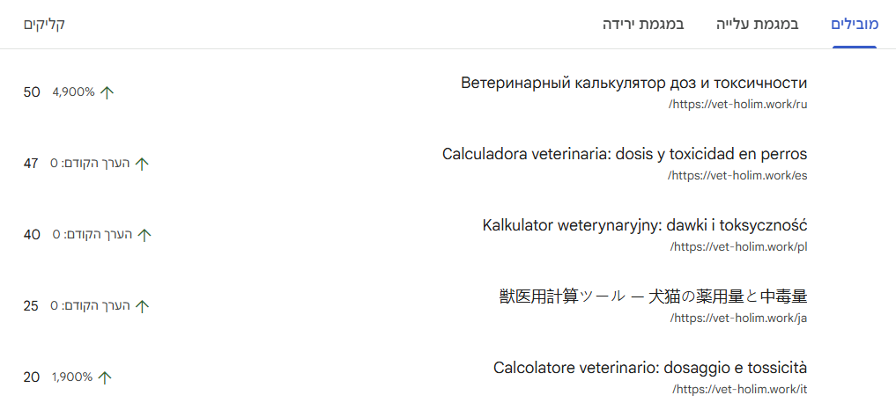

המחשבון הווטרינרי של Vet-Flow
צילום מסך מתוך Google Search Console

חינם
בלי הרשמה ובלי חשבון
14
שפות
130
תרופות
מחשבוני רעילות
מינוני הייחוס לכלבים ולחתולים לפי Plumb’s Veterinary Drug Handbook, מהדורה 10.